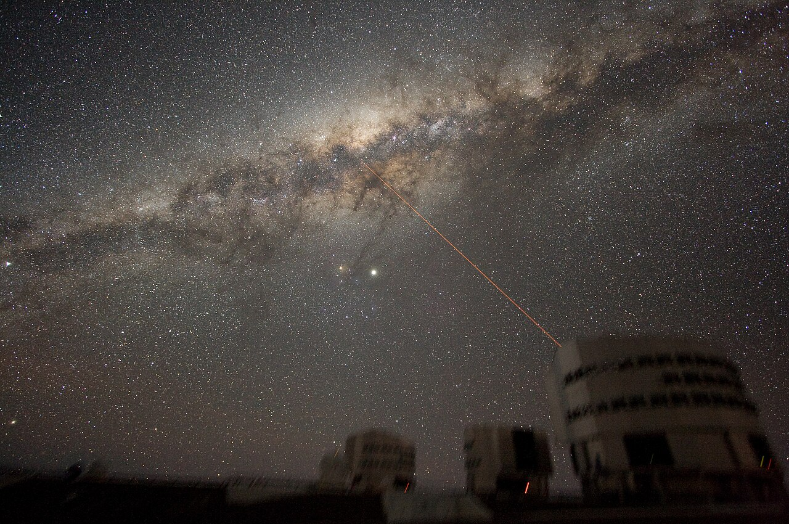
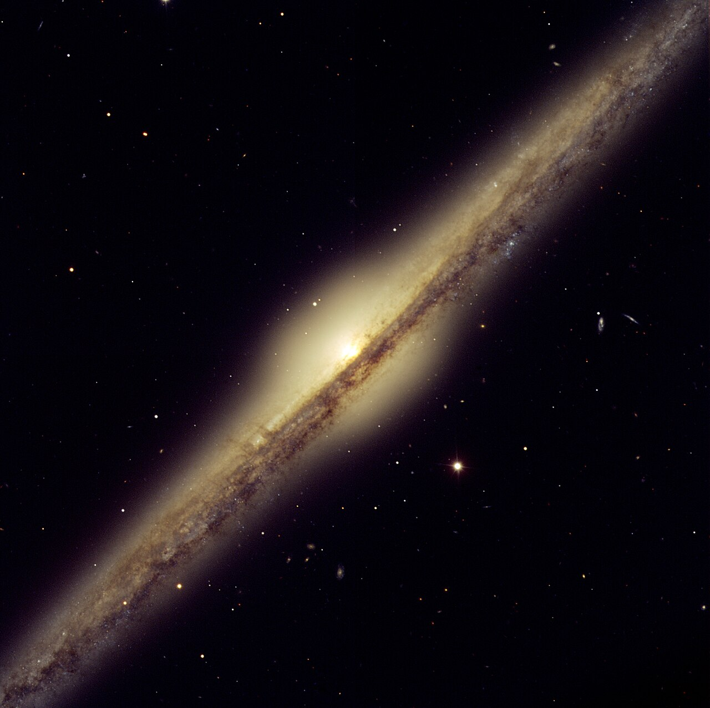
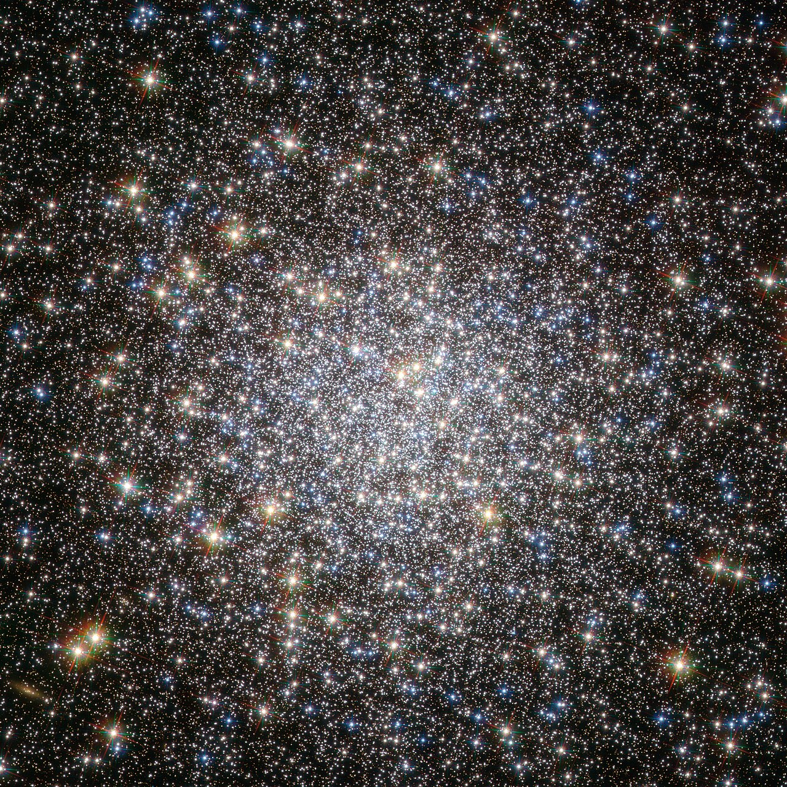
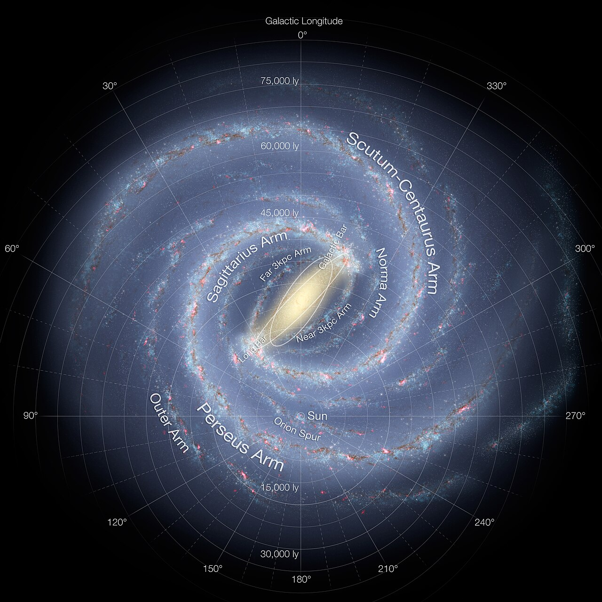

동기 유발
은하수 속에서 은하수의 모양을 알 수 있을까?
교과서 p. 80학습 목표
- 성단의 C-M도를 이용하여 성단의 나이와 거리를 구할 수 있다.
- 맥동 변광성의 주기–광도 관계를 이용하여 우리은하의 구조와 규모를 설명할 수 있다.

ESO/Y. Beletsky, CC BY 4.0

ESO, CC BY 3.0
숲속에 서 있으면 숲 전체의 모양을 알기 어렵다.
우리은하 안에 있는 우리는 어떻게 은하의 모양과 크기, 우리의 위치를 알아냈을까?
우리은하 안에 있는 우리는 어떻게 은하의 모양과 크기, 우리의 위치를 알아냈을까?
'안에서 바깥 모양을 알아내기' 문제. 별을 세는 방법(허셜·캅테인)이 왜 실패했는지(성간 소광) 시뮬레이션 1로 직접 체험하게 합니다. 교과서 운영안은 5차시(색지수·C-M도 2 / 세페이드·섀플리 2 / 구조 1)입니다.
핵심 개념 1
색지수와 성단의 C-M도
교과서 p. 80 ~ 83(1) 색지수
- 별의 밝기를 서로 다른 필터(U: 자외선, B: 파랑, V: 노랑–초록)로 재면 별의 색에 따라 등급이 다르다.
- 색지수 = 짧은 파장 등급 − 긴 파장 등급 (예: B − V). 별까지의 거리와 관계없이 별의 색(표면 온도)만 알려 준다.
- 표면 온도가 높을수록 색지수가 작다(파란 별은 B에서 더 밝아 B 등급이 작음). 약 1만 K인 A0형 별의 B − V = 0이다.
| 분광형 | O5 | B0 | A0 | F0 | G2 (태양) | K0 | M0 |
|---|---|---|---|---|---|---|---|
| 표면 온도 (K) | 약 42000 | 30000 | 9800 | 7300 | 5800 | 5300 | 3900 |
| B − V | −0.33 | −0.30 | 0.00 | +0.30 | +0.65 | +0.81 | +1.40 |
(2) 성단의 C-M도로 나이와 거리 구하기
- C-M도(색–등급도): 가로축 색지수, 세로축 등급으로 그린 그림. H-R도를 관측량으로 바꾼 것이다.
- 성단의 별들은 같은 시기·같은 거리에서 태어났지만 질량이 다르다. 무거운 별부터 주계열을 먼저 떠난다.
- 전향점: 주계열에서 별이 거성 쪽으로 꺾여 나가는 점. 전향점이 아래쪽(어둡고 붉은 쪽)일수록 성단의 나이가 많다.
- 산개 성단: 수백 ~ 수천 개의 젊은 별, 은하 원반에 분포, 전향점이 높다. 구상 성단: 수십만 개의 늙은 별, 헤일로에 분포, 전향점이 낮고 적색 거성이 많다.
- 주계열 맞추기: 성단의 주계열(겉보기 등급)을 표준 주계열(절대 등급)에 위아래로 맞춘 이동량 = 거리지수(m − M)
NASA, ESA, AURA/Caltech

NASA/ESA Hubble
핵심 개념 2
세페이드 변광성과 우리은하의 중심
교과서 p. 84 ~ 87(1) 별을 세어 은하를 그린 사람들
1785허셜방향별로 별을 세어 납작한 원반 모양, 태양은 중심 근처
→
1922캅테인별의 밝기·고유 운동으로 지름 약 15 kpc의 원반, 태양은 중심 근처
→
1918섀플리구상 성단의 거리 측정 → 중심은 궁수자리 방향 멀리
→
1924허블안드로메다의 세페이드 → 외부 은하 확인
- 허셜과 캅테인은 성간 소광(티끌이 빛을 가림)을 몰라, 어느 방향이든 비슷한 거리까지만 별이 보이는 것을 '은하의 끝'으로 착각했다. 그래서 태양이 중심에 있다고 생각했다.
- 섀플리는 원반 위아래로 넓게 퍼져 티끌의 영향을 덜 받는 구상 성단의 거리를 그 속의 맥동 변광성으로 재었다. 구상 성단 분포의 중심 = 은하의 중심 → 태양은 중심에서 멀리 떨어져 있다.
시뮬레이션 1허셜의 착각: 티끌 속에서 별을 세면?
위에서 내려다본 은하 원반(모형). 노란 점이 태양이다. 티끌이 많으면 태양 주변 일정 거리까지만 별이 보여, 보이는 별의 중심이 태양 근처가 된다. '구상 성단 보기'를 켜서 섀플리처럼 중심을 다시 찾아보자.
(2) 천체까지의 거리 측정 방법
| 방법 | 원리 | 쓸 수 있는 거리 |
|---|---|---|
| 레이더 | 전파 왕복 시간 | 태양계 안 |
| 연주시차 | 지구 공전에 따른 시차 | ~ 수천 pc (가이아) |
| 주계열 맞추기 · 분광 시차 | C-M도·스펙트럼으로 절대 등급 추정 | ~ 수만 pc (우리은하 안) |
| 세페이드 변광성 | 주기–광도 관계 | ~ 수천만 pc |
| Ia형 초신성 | 최대 절대 등급 약 −19.3 | ~ 수십억 pc |
| 허블 법칙 | 적색 편이 ∝ 거리 (III-04) | 먼 우주 |
핵심 개념 3
우리은하의 구조와 규모
교과서 p. 85막대 나선 은하, 우리은하
- 은하핵·팽대부: 중심부의 볼록한 부분. 늙은 별이 많고 막대 구조가 있다. 중심에는 태양 질량의 약 400만 배인 블랙홀 궁수자리 A*가 있다.
- 원반(나선팔): 지름 약 30 kpc(약 10만 광년), 두께는 수백 pc. 젊은 별·산개 성단·성간 물질이 많다.
- 헤일로: 원반을 공 모양으로 둘러싼 영역. 구상 성단과 늙은 별, 그리고 대부분의 암흑 물질(III-03)이 있다.
- 태양의 위치: 은하 중심에서 약 8.2 kpc(약 2만 6천 광년) 떨어진 원반 위, 나선팔 사이의 '오리온 팔'

NASA/JPL-Caltech/R. Hurt (SSC/Caltech)
시뮬레이션 23D 우리은하 모형: 돌려 보기
마우스로 끌어 회전할 수 있다. 원반·팽대부·헤일로의 크기와 태양의 위치를 확인하자.
원반 지름 ≈ 30 kpc · 태양–중심 ≈ 8.2 kpc
원반 지름 ≈ 30 kpc · 태양–중심 ≈ 8.2 kpc
점의 색: 파랑 = 나선팔의 젊은 별, 노랑 = 팽대부·막대의 늙은 별, 주황 동그라미 = 구상 성단. 실제 별 수와 비율은 단순화했다.
데이터 탐구
모형 맞추기로 성단의 거리와 나이 동시에 구하기
탐구 개요
가이아처럼 성단 별들의 색지수와 겉보기 등급을 측정한 모의 자료 4개가 있다. 이론으로 계산한 등연령선(같은 나이 별들이 C-M도에 그리는 선)을 위아래로 옮기고(거리) 나이를 바꿔 가며 관측 자료와 가장 잘 맞는 값을 찾는다. 맞는 정도는 '평균 제곱 잔차'라는 숫자로 평가한다. 천문학자와 데이터 과학자가 모형을 자료에 맞추는 방법 그대로이다.
눈으로 맞추기성단을 고르고, 거리지수 슬라이더로 주계열의 높이를 먼저 맞춘다.
나이 맞추기나이 슬라이더로 전향점과 거성 가지를 맞춘다.
숫자로 평가'평균 제곱 잔차'가 가장 작아지도록 미세 조정한다. 값이 작을수록 모형이 자료를 잘 설명한다.
컴퓨터와 비교'자동 맞추기'(격자 탐색)를 눌러 컴퓨터가 찾은 값과 내 값을 비교하고, 거리(pc)와 나이를 정리한다.
데이터 랩C-M도 모형 맞추기
점: 관측된 성단 별(겉보기 등급). 노란 선: 등연령선 모형(절대 등급 + 거리지수). 성간 소광은 없다고 가정한 모의 자료이다.
분석 질문
1. 네 성단의 거리(pc)와 나이를 표로 정리하고, 산개 성단과 구상 성단으로 분류해 보자.
A: m − M ≈ 5.65 → 약 135 pc, 약 1억 년(플레이아데스형 산개 성단) · B: ≈ 3.3 → 약 46 pc, 약 6억 년(히아데스형 산개 성단) · C: ≈ 9.6 → 약 830 pc, 약 40억 년(M67형 늙은 산개 성단) · D: ≈ 14.4 → 약 7.6 kpc, 약 120억 년(M5형 구상 성단). D만 수평 가지가 있고 전향점이 가장 낮다.
2. 거리지수와 나이를 '동시에' 맞춰야 하는 까닭은? 둘 중 하나가 틀리면 어떤 일이 생길까?
전향점의 높이는 거리(위아래 이동)와 나이(전향점 위치) 모두에 영향을 받는다. 거리를 너무 가깝게 잡으면 전향점이 실제보다 밝아 보여 나이를 젊게 판단하게 된다. 그래서 전향점에 영향을 덜 받는 주계열 아래쪽으로 거리를 먼저 맞추고, 그다음 나이를 맞춘다.
3. 평균 제곱 잔차를 쓰는 까닭은 무엇이며, 자동 맞추기(격자 탐색)의 한계는?
모든 별에서 모형과의 차이를 제곱해 평균하면 '얼마나 잘 맞나'를 하나의 숫자로 비교할 수 있다(부호 상쇄 방지). 격자 탐색은 모든 조합을 다 계산하므로 느리고, 격자 간격보다 정밀한 값은 찾지 못한다. 또 모형 자체가 틀리면(예: 소광 무시) 최적값도 틀린다.
형성 평가
개념 확인 문제
그림·자료 출처
사진: ESO, NASA/ESA Hubble, NASA/JPL-Caltech (Wikimedia Commons 경유) 및 Wikimedia Commons 이용자 사진. C-M도 자료는 단순화한 등연령선 모형으로 만든 교육용 모의 자료입니다. 시뮬레이션은 직접 만들었습니다.